Tomi : apprendre ses tables de multiplication, à son rythme
Tomi aide votre enfant à apprendre ses tables de multiplication en séances courtes. Le moteur pédagogique repère ce qu'il sait déjà et lui fait revoir, au bon moment, ce qui est encore fragile.
Application Android en phase de test, pas encore disponible pour tous sur Google Play.
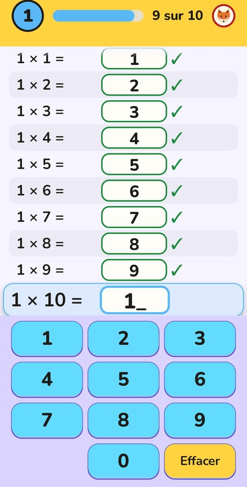
À quoi sert Tomi ?
Tomi est une application Android pour réviser les tables de multiplication, de 1 à 10, avec un adulte qui garde la main. Les séances sont courtes. L'application retient ce que l'enfant réussit et ce qui reste fragile, et le lui repropose au bon moment. Le parent suit les progrès dans un espace qui lui est réservé.
Les modes d'exercice
- Dans l'ordreOn complète la table du début à la fin.
- À l'enversOn part de 10 et on descend.
- Dans le désordreLes multiplications arrivent mélangées.
- RafaleUne multiplication à la fois : on répond vite, avec 90 secondes.
Mode d'emploi
- Installez Tomi et lisez l'information du premier écran « Avant de commencer ». Cochez la case pour accepter que les réponses de votre enfant soient enregistrées sur ce téléphone : sans cet accord, l'application ne peut pas garder sa progression.
- Protégez l'espace parent : choisissez une question dont vous seul connaissez la réponse. Elle sera posée chaque fois que quelqu'un touchera le bouton « Parent ».
- Ajoutez vos enfants : prénom, âge, avatar et couleur. Le prénom, l'âge exact et l'avatar restent sur le téléphone.
- L'enfant joue : il touche son avatar sur l'écran « Qui joue ? », choisit une table, puis le mode d'exercice. L'application lui annonce le mode avant de commencer.
- Vous suivez les progrès dans l'espace parent, table par table, pour chaque enfant.
- Vous pouvez, si vous le souhaitez, exporter des données pour aider à améliorer l'application : vous voyez un aperçu, vous cochez les enfants concernés, puis vous envoyez le fichier vous-même avec la messagerie de votre choix. C'est facultatif.
- Vous pouvez tout effacer à tout moment depuis l'espace parent.
Vos données
L'application n'a aucun accès à Internet : elle ne peut rien envoyer toute seule. Il n'y a ni compte, ni publicité. L'export est facultatif ; les données exportées sont pseudonymisées (un code remplace le prénom ; ni le prénom, ni l'âge exact, ni l'avatar ne sont envoyés).
Captures d'écran
Les prénoms « cal » et « lil » sont fictifs.
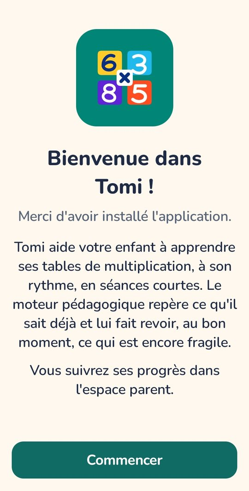
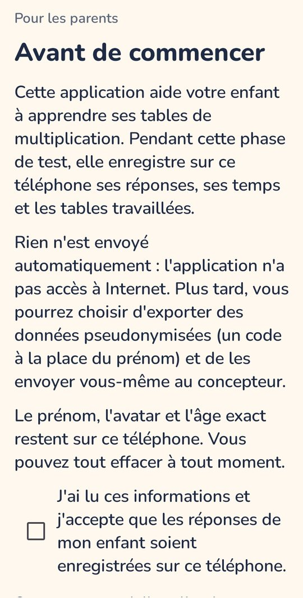
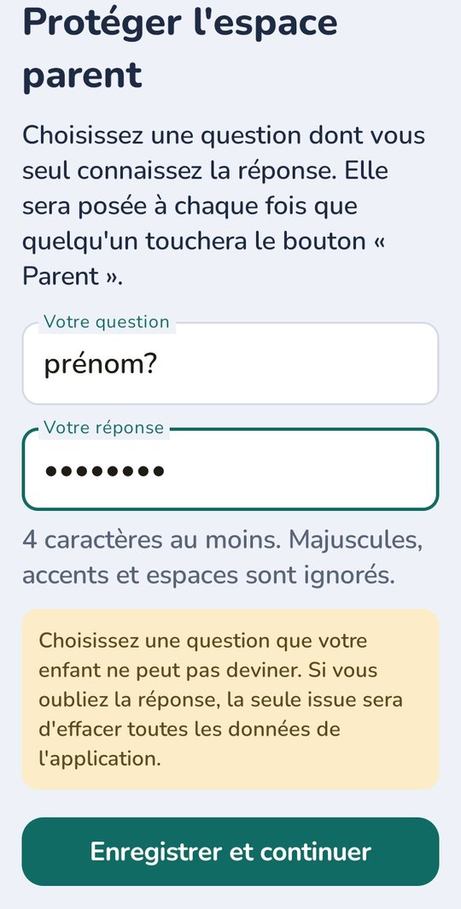
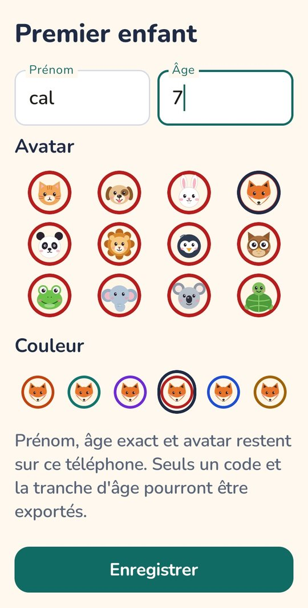
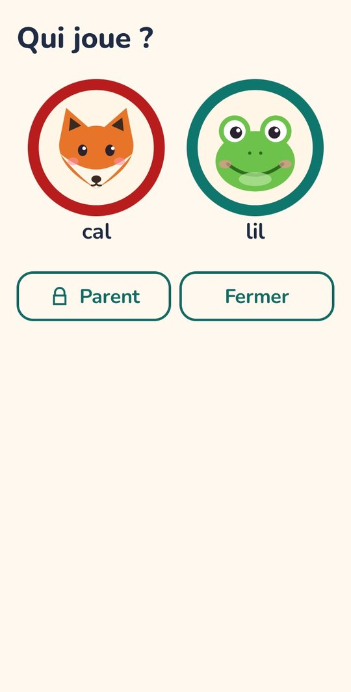
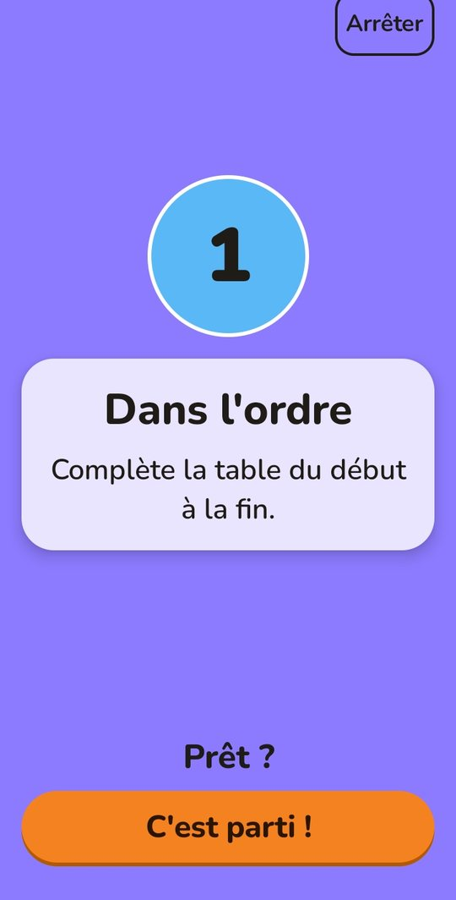
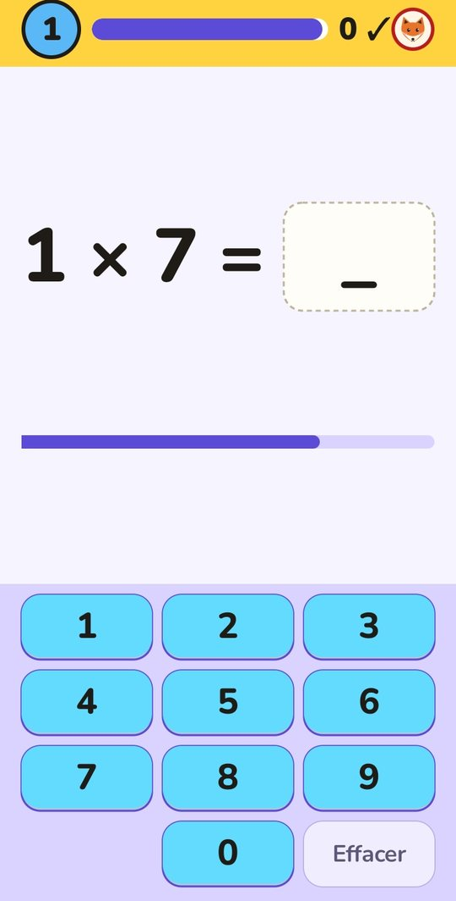
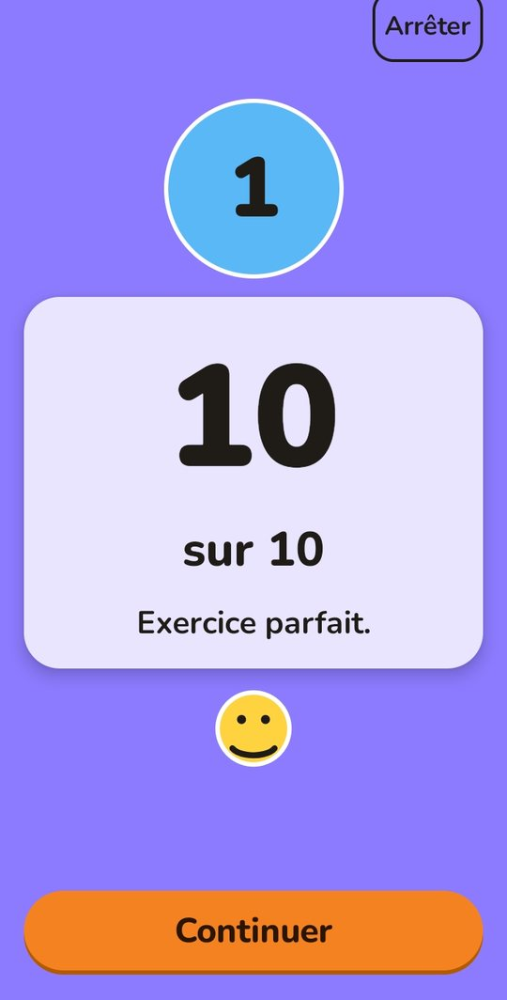
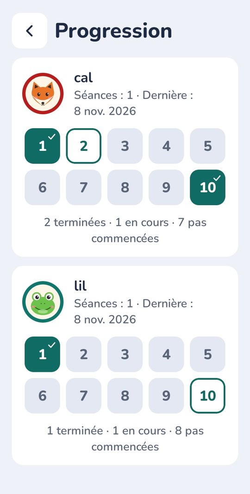
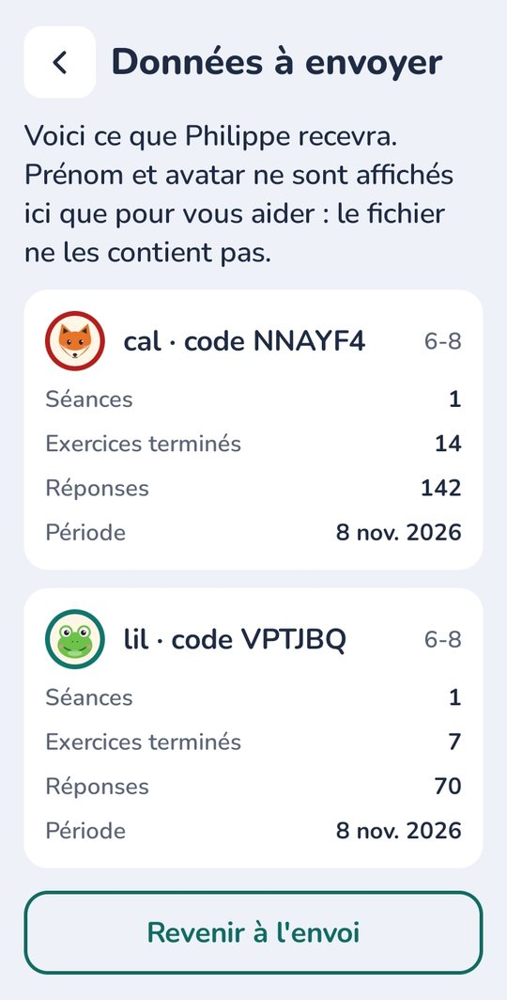
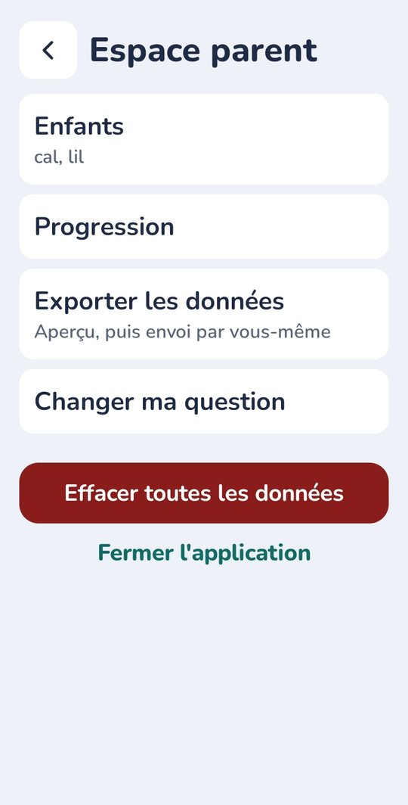
Contact
Une question, une remarque, une demande d'accès, de correction ou de suppression de données ? Écrivez à :
support.phpons@gmail.comPour une demande portant sur des données déjà envoyées, indiquez le code de l'enfant (affiché dans l'espace parent).